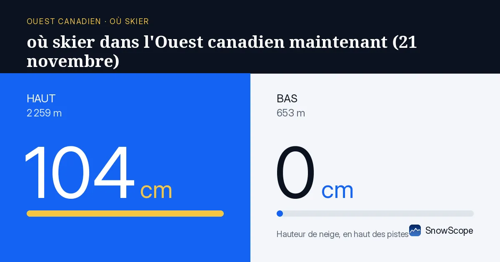

150 cm à Whistler Blackcomb : où skier dans l'Ouest canadien maintenant (21 novembre)
150 cm en haut du domaine : voilà pourquoi Whistler Blackcomb est en tête de notre liste. La neige au sol, la neige des 72 dernières heures, la neige encore à venir : ensemble, elles désignent Whistler Blackcomb, Mount Washington Alpine Resort et Mount Cain Alpine Park. Le manteau le plus épais du groupe est à Whistler Blackcomb, environ 150 cm sur le haut du domaine ; ensuite Big White 101 cm et Mount Washington Alpine Resort 95 cm. La neige en montagne, c'est de l'eau mise de côté pour le printemps : ce qui tombe maintenant alimente plus tard rivières et barrages.
Consultez les prévisions neige en temps réel pour Whistler Blackcomb sur l'application SnowScopeHauteurs de neige, alertes poudreuse et carte 3D, gratuitement.
La neige encore à venir
D'ici le 24 novembre, la prévision ajoute 33 cm à Whistler Blackcomb, 76 cm à Mount Washington Alpine Resort et 57 cm à Mount Cain Alpine Park ; les quantités à plusieurs jours peuvent encore changer.
Les prévisions à quelques jours peuvent changer : regardez à nouveau la carte la veille du départ.
| Station | Hauteur de neige | Neige fraîche, 72 h | Attendu, jours suivants | Sommet |
|---|---|---|---|---|
| Whistler Blackcomb | 150 cm | 0 cm | 33 cm | 2 259 m |
| Mount Washington Alpine Resort | 95 cm | 1 cm | 76 cm | 1 569 m |
| Mount Cain Alpine Park | 93 cm | 0 cm | 57 cm | 1 616 m |
| Big White | 101 cm | 0 cm | 2 cm | 2 271 m |

Face aux hivers passés
Vers 1 456 m, Whistler Blackcomb a 61 cm aujourd'hui ; un 21 novembre normal y compte 122 cm.
Un hiver sur dix seulement dépasse 182 cm à cette date.
Il y a une semaine, le même endroit avait 48 cm.
Les hivers passés, la meilleure neige à Whistler Blackcomb arrivait d'habitude mi-mars / fin mars.
Un début lent est fréquent et dit peu de choses sur janvier ; pour l'instant, les remontées les plus hautes et les pistes équipées de neige de culture sont le choix sûr.
Jour après jour à Whistler Blackcomb : dimanche 22 novembre 4 cm; lundi 23 novembre 2 cm; mardi 24 novembre 27 cm.
Altitude par altitude à Whistler Blackcomb : 653 m 0 cm au sol, 1 cm de plus dans les 7 prochains jours; 1 456 m 48 cm au sol, 13 cm de plus dans les 7 prochains jours; 2 259 m 104 cm au sol, 15 cm de plus dans les 7 prochains jours.
L'altitude et la limite pluie-neige
À Whistler Blackcomb, l'isotherme 0 °C atteint 500 m à 1 290 m le 21 novembre : plus bas, la neige peut devenir mouillée, plus haut elle reste froide.
Les pentes sud prennent le plus de soleil et fondent d'abord ; les pentes nord en altitude gardent leur neige le plus longtemps.
Où la neige est la meilleure
SnowScope découpe Whistler Blackcomb en trois altitudes : 104 cm au sommet (2 259 m), 48 cm à mi-pente (1 456 m), 0 cm en bas (653 m).
Le 19 novembre, son dernier jour dégagé, La carte de neige a montré la neige couvrir Mount Washington Alpine Resort.
À Mount Cain Alpine Park, l'altitude change tout : SnowScope donne 4 cm en bas (1 190 m), 21 cm à mi-pente (1 403 m) et 66 cm au sommet (1 616 m).
La sécurité d'abord
Avant le hors-piste ou la randonnée, lisez le bulletin d'avalanche officiel (liens ci-dessous).
Conseils aux skieurs
- De la neige sur la carte ne veut pas dire que la station est ouverte : vérifiez remontées et dates d'ouverture sur son site.
- Une perturbation couvre toute une vallée, pas seulement la station célèbre. Les petits domaines voisins ont souvent reçu une neige semblable : comparez-les sur la carte.
- La neige de début de saison est fine. Restez sur les pistes ouvertes et damées : cailloux et herbe se cachent juste dessous.
- Dans les montagnes sèches comme l'Atlas, la neige tient en altitude sur les pentes nord et fond d'abord côté soleil. Suivez l'ombre.
- Activez une alerte poudreuse dans l'app SnowScope pour savoir quand Whistler Blackcomb reçoit de la neige fraîche.
À propos de ces chiffres
Les hauteurs de neige des stations sont la neige la plus épaisse sur le haut du domaine à la date indiquée ; ce sont des estimations pour une zone, pas une mesure en un point. Les prévisions peuvent changer. Consultez toujours le bulletin d'avalanche officiel avant le hors-piste.
Bulletins d'avalanche officiels: Avalanche Canada
Citer ce bulletin
Pour la recherche, l'enseignement ou la presse : chiffres et graphiques réutilisables librement sous CC BY 4.0 avec cette citation.
SnowScope (2026), 150 cm à Whistler Blackcomb : où skier dans l'Ouest canadien maintenant (21 novembre), https://snowscope.app/blog/fr/2026/11/western-canada-where-to-ski-best-snow-21-november-2026.html, consulté le 2026-11-21
SnowScope (Atlas Labs). (2026, November 21). 150 cm à Whistler Blackcomb : où skier dans l'Ouest canadien maintenant (21 novembre). SnowScope snow reports. https://snowscope.app/blog/fr/2026/11/western-canada-where-to-ski-best-snow-21-november-2026.html
BibTeX
@misc{snowscope2026westerncanadawheretoskib,
author = {{SnowScope (Atlas Labs)}},
title = {150 cm à Whistler Blackcomb : où skier dans l'Ouest canadien maintenant (21 novembre)},
year = {2026},
month = nov,
howpublished = {\url{https://snowscope.app/blog/fr/2026/11/western-canada-where-to-ski-best-snow-21-november-2026.html}},
note = {Published 2026-11-22 10:03 UTC; accessed 2026-11-21}
}· CC BY 4.0 · Méthodes, données et outils →
Whistler Blackcomb : neige et température selon l'altitude, cet hiver vs l'hiver dernier (outils) →
Suivre Whistler Blackcomb
Gratuit : un message quand la neige arrive, et la météo chaque matin.
Autres bulletins neige

À Big White le 15 novembre, les pentes supérieures retiennent 68 cm près du sommet tandis que la base reste dégagée ; un gradient vertical extrême typique du début de saison.

Whistler Blackcomb affiche 116 cm sur les pentes supérieures au 12 novembre, avec 83 cm prévus au cours des trois prochains jours. Mount Washington Alpine Resort domine la région avec 162 cm.

Mount Washington retient 145 cm le 8 novembre, le plus profond de l'Ouest canadien, mais le niveau de congélation montera au-dessus du sommet d'ici le 11 novembre.